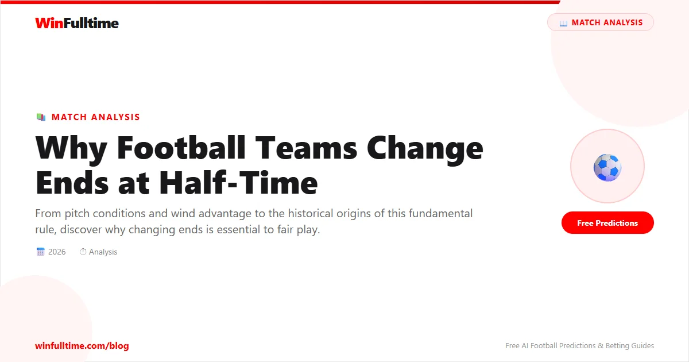

At every level of football, from the World Cup final to a Sunday morning amateur league, the half-time whistle triggers the same ritual: both teams walk to the opposite end of the pitch. It is so routine that most fans barely register it happening. But the practice of changing ends is not arbitrary. It is a rule with a specific purpose, a long history, and a measurable impact on the outcome of matches.
Football teams change ends at half-time to ensure fair play. By swapping sides, both teams get an equal opportunity to play with or against environmental factors such as wind, sun, slope, and pitch surface conditions. Without this rule, one team could enjoy a significant and unearned advantage for the entire match.
The requirement to change ends is governed by Law 7 of IFAB's Laws of the Game, the official rulebook used in every organised football competition worldwide. The law states simply: "The teams change ends at the start of the second half." It also specifies that in extra time, teams change ends again before each period of extra time.
The coin toss before kick-off determines which end each team attacks first. The captain of the home team calls the toss, and the winning side chooses which goal to attack in the first half. The losing side takes the opposite end. At half-time, the teams swap, and the team that attacked the left goal in the first half will attack the right goal in the second half.
The rule is universal. Whether the match is a Champions League knockout tie, a domestic cup tie with extra time and penalties, or an under-12 youth game in a local park, changing ends at half-time is mandatory. No competition at any level is exempt from it.
The practice of changing ends dates back to the earliest organised football rules of the 1860s, but its original form was far more frequent than today. Under the original rules drafted by the Football Association in 1863, and refined in subsequent decades, teams changed ends every time a goal was scored.
This meant that in a match where six goals were scored, the teams would change ends six times. The logic was straightforward: if one end of the pitch was in better condition, or the wind blew towards one goal, a team scoring a goal would immediately give up that advantage by switching ends. Frequent changes were seen as the fairest way to neutralise environmental factors.
However, the constant switching created significant problems. Spectators became confused about which team was attacking which goal. Newspapers reporting on matches struggled to describe the action coherently. And the interruptions to change ends disrupted the flow of the game, turning each goal into a pause as well as a celebration.
In 1874, the Football Association made a decisive change. The rule was amended so that teams would only change ends at half-time, not after every goal. The decision was driven by practical concerns about the spectator experience and the coherence of the game. The single half-time change preserved the fair play principle while eliminating the confusion caused by frequent switching.
Of all the environmental conditions that make changing ends necessary, wind is by far the most significant. A strong wind can dramatically alter the dynamics of a football match, affecting everything from the flight of long passes and goal kicks to the trajectory of crosses and free kicks.
When a team kicks with the wind in the first half, their goal kicks travel further, their long balls carry more distance, and their crosses reach the box with more pace. The opposing team, kicking against the wind, finds their clearances held up, their long passes falling short, and their attacking play stifled.
A study of 3,800 Premier League matches found that the team winning the coin toss and choosing to kick with the wind in the first half won approximately 46% of their matches, compared to just 35% for the team kicking against the wind. The remaining 19% were draws. This is a substantial statistical advantage, and it illustrates precisely why changing ends at half-time is essential.
Goal kicks — A strong tailwind can carry goal kicks an extra 10-15 metres, allowing goalkeepers to find targets further up the pitch. Against the wind, goal kicks may fall short of the halfway line.
Long passing — Balls played over the top are more effective with the wind, as they carry further and faster. Teams playing with the wind can stretch the pitch vertically.
Crosses and set pieces — Corners and wide free kicks delivered with the wind behind them arrive with more pace and dip, making them harder to defend.
Goalkeeper distribution — Goalkeepers throwing or kicking into a headwind find their distribution significantly reduced in range, limiting their ability to start counter-attacks.
The data makes the case clearly: without the half-time change of ends, the team that won the toss and chose to play with the wind would hold an unfair advantage for the entire match. The single change at half-time ensures that each team gets one half with the wind and one half against it, levelling the playing field.
Wind is the most obvious factor, but it is not the only one. Many football pitches, particularly older grounds and lower-league grounds, have a noticeable slope from one end to the other. This slope is often the result of drainage gradients, the natural topography of the land, or the way the pitch was originally constructed.
A team attacking uphill in the first half faces a physically demanding task. Long balls tend to fall short, the pace of the game feels slower, and the attacking team must work harder to create chances. Conversely, the team attacking downhill enjoys a natural momentum that can translate into more scoring opportunities.
Pitch surface conditions also vary between ends. One goalmouth may be more worn than the other, particularly if one team has been defending heavily in a particular area. The ends of the pitch near the goals tend to suffer more degradation due to goalkeeper activity, goal kicks, and the concentration of play in the penalty area. By switching ends at half-time, both teams are exposed to both goalmouths equally.
At the old Boleyn Ground, West Ham's home, the pitch had a notorious slope that ran from the Bobby Moore Stand end towards the Chicken Run end. The slope was noticeable enough that it influenced the style of play in each half. After half-time, the change of ends neutralised this advantage, ensuring both teams dealt with the gradient for equal periods.
Modern pitch construction and maintenance have reduced the severity of slopes at top-level grounds, but drainage gradients remain a factor. Even the best-maintained pitches are not perfectly flat, and the subtle differences between ends can influence the dynamics of a close match.
Sun position is another factor that changing ends addresses. In afternoon matches, particularly during autumn and winter, the low sun can directly affect one end of the pitch while leaving the other in relative shade. A goalkeeper staring into a setting sun during a crucial penalty save, or a defender trying to track a high ball with the sun in their eyes, faces a genuine disadvantage.
Unlike wind or slope, the sun moves throughout the match. A team that kicks towards the sun in the first half may find the sun has shifted by the second half. However, the principle of equal exposure remains. By switching ends, both teams must deal with the sun at some point during the match, rather than one team suffering for 90 minutes while the other enjoys clear sightlines throughout.
Stadium floodlights introduce another consideration for evening matches. The angle and intensity of floodlights can vary between ends of the pitch, particularly at older grounds where the lighting rigs were installed at different times or to different specifications. Changing ends ensures both teams experience the same lighting conditions in both halves.
The coin toss before kick-off is often dismissed as a formality, but the data suggests it has a meaningful impact on the match outcome. The captain who wins the toss gets to choose which end to attack first, and most experienced captains will choose to kick with the wind in the first half if wind is a significant factor.
The logic is tactical. Playing with the wind in the first half allows a team to establish an early lead. If they can capitalise on the wind advantage to score first, they can then defend more conservatively in the second half when they are kicking against it. The psychological impact of leading at half-time is significant, and the team that chose to kick with the wind has put themselves in a strong position to do so.
Some captains choose to attack the end their fans are behind in the second half, prioritising the psychological boost of finishing the match in front of their own supporters. This is particularly common in cup finals and play-off matches, where the emotional dimension of the occasion can be as important as the tactical one.
The rule does not stop at half-time. In extra time, teams change ends again before the start of the first period of extra time. This means that if a match goes to extra time, the teams will have changed ends three times in total: once at half-time, once before the first period of extra time, and once before the second period of extra time.
The additional change before each extra-time period is designed to maintain the fair play principle over the extended playing time. In extra time, both teams are already fatigued, and any environmental advantage could be amplified. The extra change ensures that neither team is forced to play the entirety of extra time with or against the same conditions.
If a match reaches a penalty shootout, the ends are determined by a further coin toss. The team that wins the toss chooses which goal to take penalties at, and the shootout proceeds from there. There is no further change of ends during the shootout itself.
Regular match (90 minutes): One change of ends at half-time.
Match with extra time (120 minutes): Three changes of ends — at half-time, before the first period of extra time, and before the second period of extra time.
Match with penalties: Three changes of ends, plus a coin toss to determine which goal is used for the shootout.
Football is not the only sport that changes ends to ensure fair play. The principle of equal exposure to environmental conditions is embedded in the rules of many major sports.
In rugby union and rugby league, teams change ends at half-time, just as in football. In cricket, teams change ends between innings, and the fielding side changes ends after each over. In tennis, players change ends after every odd-numbered game and at the end of each set. In bowls, teams change ends regularly throughout the match.
The universality of this principle across sports underscores its importance. Wherever environmental conditions can influence the outcome, governing bodies have introduced mechanisms to ensure both sides are equally affected. Football's change of ends at half-time is simply one expression of this broader commitment to competitive fairness.
The tradition is so deeply embedded in football culture that even at youth and grassroots level, where competitive stakes are lower, changing ends at half-time is universally practiced. It is one of the first rules young players learn, and it is applied with the same consistency at an under-8s training match as it is at a World Cup semi-final.
Football teams change ends at half-time because the principle of fair play demands it. Wind, sun, slope, and pitch conditions all create potential advantages for one end over the other. By switching sides at the interval, both teams are guaranteed equal exposure to these factors, ensuring the match is decided by skill, tactics, and effort rather than by which end of the pitch a team happens to be attacking.
The rule dates back to the 1860s, was refined in 1874 when the FA ended the practice of changing after every goal, and remains enshrined in Law 7 of the Laws of the Game. It is universal, applied at every level of the sport, and supported by data that shows the significant impact of environmental factors on match outcomes.
Every time you see two teams walk to opposite ends at the half-time whistle, you are watching a tradition that has protected the integrity of football for over 160 years. It is one of the simplest rules in the game, and one of the most important.
Check our free daily football predictions for every match of the season.
Generate optimized accumulator combinations from today's AI-powered predictions. Set your target odds and get instant ticket suggestions.
Free Ticket Builder →